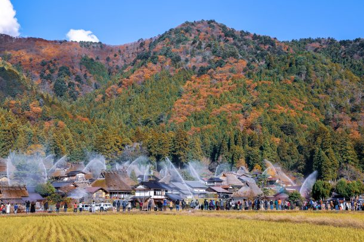
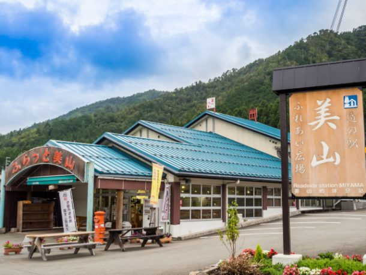
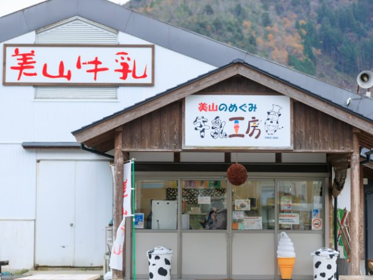
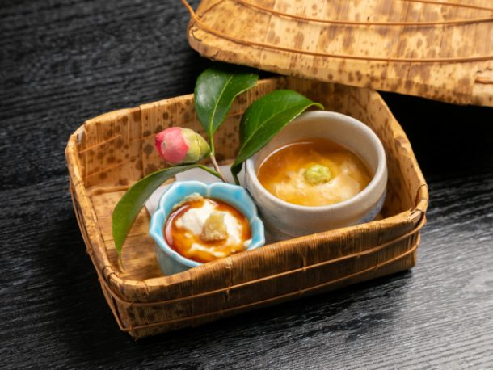
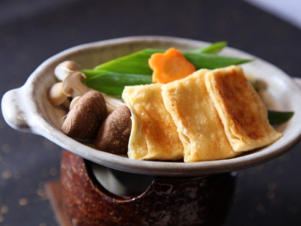

最新の情報は 公式サイトのツアーページ をご覧ください。
【12/1限定】迫力の一斉放水！美山かやぶきの里を訪ねて～ゆば尽くしの昼食と、美山の小さな旅～
※大人・子ども同額
| お申込み状況(最少催行人数6名) |
※最新のお申込み状況はお問い合わせください
冬の美山の特別な一日。
美しいかやぶき屋根が連なる「かやぶきの里」で、年に数回行われる一斉放水。
合図とともに一斉に放たれる水が、かやぶきの里を包み込む光景は、思わずカメラを向けたくなるほどの迫力です。
一斉放水を楽しんだ後は、京ゆば料理の専門店「静家 美山本店」へ。
厳選した国産大豆と美山の水から作られるゆばを使った、7品の「ゆば尽くし膳」をゆっくりと味わいます。
午後は、かわいらしい「ぬいぐるみ神社」や美山ふれあい広場へ。
美山ならではのお買物を楽しんだり、最後は静かな岩戸落葉神社にも立ち寄ります。
一年に一度しか見られない特別な風景。
美山ならではの美味しいもの。
そして、のどかな里山をめぐる小さな旅。
いつもの京都から少し足を延ばして、12月1日だけの美山へ。
心に残る冬の一日を過ごしてみませんか？
| 🚙おすすめポイント |
| ★かやぶき屋根を守るため行われる一斉放水を見学 合図とともに一斉に放たれる水が、かやぶきの里を包み込む迫力ある光景をお楽しみいただきます ★ランチは静家 美山本店へ 厳選した国産大豆と美山の水から作られるゆばを使った「ゆば尽くし膳」を堪能 ★美山ならではの楽しみをめぐる ぬいぐるみ神社への参拝や、道の駅でのお買物など ★車移動だからラクラク 美山のスポットも効率よくめぐります |
行程
| 時間 | 場所 |
| 8:30 | 京都駅八条口MKタクシーのりば （集合・出発） |
| 10:30 | 美山かやぶきの里 ★自由散策後、一斉放水を見学 ＜放水約5分／11：45出発＞ |
| 12:00 | 静家 美山本店 ＜名物ゆば尽くし膳7品の昼食＞ |
| 13:30 | ぬいぐるみ神社 ＜自由参拝＞ |
| 14:30 | 道の駅 美山ふれあい広場 ＜休憩・お買い物＞ |
| 15:20 | 岩戸落葉神社 ＜立ち寄り／約10分＞ |
| 16:30頃 | 京都駅八条口（解散） |
美山かやぶきの里（放水の様子）

写真提供：一般社団法人南丹市美山観光まちづくり協会
美山ふれあい広場
-

-

一般社団法人南丹市美山観光まちづくり協会
静家 美山本店


名物ゆば尽くし膳7品（イメージ）
【MKトラベルLINE公式アカウント】
MKトラベルの新規ツアー情報をLINEでお届けいたします

【各SNSでも京都の情報やツアー情報をお届けしています】


旅行条件
| ツアー番号 | T176CC |
| 出発地 | 京都市 |
| 添乗員／ガイド | なし（乗務員がその業務を代行いたします）／なし |
| 食事 | あり（昼食1回） |
| 最少催行人数 | 6名 |
お申込みについてのご注意
※最少催行人数は6名様です。最少催行人員に満たない場合は、旅行の実施を取りやめることがあります。出発の5日前にその旨をご連絡し、お客様から当社がお預かりしている旅行費用の全額をお返しいたします。
※旅行条件・旅行代金は、2026年9月1日現在を基準としています。
※行程および帰着時間は交通事情などにより変更になる場合があります。
※お申込みの前に弊社の募集型企画旅行規約をご確認ください。
よくある質問
美山に関してQ.美山かやぶきの里はどんな場所ですか
A.美山かやぶきの里は現在も39棟ものかやぶき屋根の民家が残っており、国の重要伝統的建造物群保存地区かつネスコ無形文化遺産にも登録されています。
地元の人々により守られたのどかな田舎の田園風景はもちろん、グルメや季節ごとのイベントなども魅力です。
Q.京都駅から美山かやぶきの里まで何時間かかりますか
A.タクシーで片道約1時間半です。本ツアーは京都駅から乗り換えなしで美山かやぶきの里まで快適に移動できます。
※公共交通機関（電車→バス乗換）の場合、約2時間
Q.美山かやぶきの里 一斉放水とは？
A.毎年春と秋の年2回行われる、放水銃の一斉点検です。
火災などから、かやぶき屋根の民家を守るため、集落内に設置された放水銃が一斉に稼働し、実際に放水が行われます。
地域の大切な防災設備の点検ですが、約5分間、かやぶき屋根の上に高く水のアーチができる様子は圧巻です！
水しぶきと美山ののどかな田園風景が織りなす、この日ならではの光景をお楽しみください。
また、地域の皆さまが大切に守っている防災の取り組みを知り、防災について考えるきっかけにもなれば幸いです。
※点検作業を円滑に行うため、放水開始の30分前から点検終了までは、集落内への立ち入りが制限されます。
Q.1名ですが、申し込みできますか？
A.はい。お一人参加の方もたくさんいらっしゃいますので、お気軽にお申し込みください。
Q.知人のみで楽しみたい／行程を一部変更してほしい
A.貸切で再現できる場合もございますのでご相談ください。お問合せフォームはこちら
＜お問合せフォームはこちら▶＞
＜MKトラベルTOPはこちら▶＞
＜おすすめツアー一覧はこちら▶＞
・TACPOカード
・クレジットカード決済
・コンビニ決済
お支払方法詳細はこちら
お客様のご都合でご予約をキャンセルされる場合は、すみやかに下記お問合せ先までご連絡ください。
キャンセル料
11日目に当たる日以前
無料
10日目に当たる日以前
20%
7日目に当たる日以前
30%
旅行開始日の前日
40%
旅行開始日の当日
50%
旅行開始後又は無連絡
100%